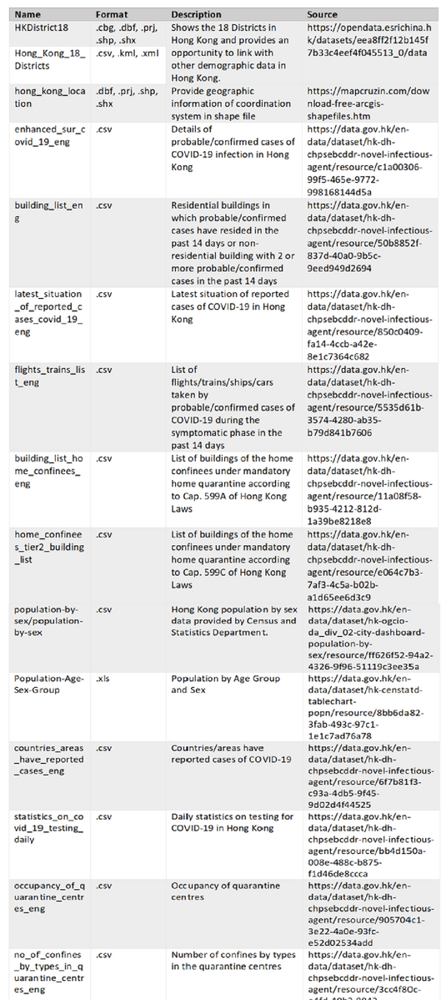

1. Project Motivation
Covid-19 is an infectious disease caused by a new strain of coronavirus, which has now spread worldwide. Currently, there are no available vaccines for global use. Because of that, it is important to study the spread of covid-19, understand where, when, and how it occurred by studying the spatio-temporal patterns of confirmed cases.
The project aims to provide a web-based geospatial application to identify areas with covid-19 and the factors affecting the spread. Most of the geospatial applications on covid-19 are limited to visualizing proportional point patterns. However, our group is also concerned about the factors affecting the spread of covid-19.
Due to the limited number of covid-19 data Singapore has to offer, our group has decided to focus on Hong Kong as the choice of study area as it offers more data as compared to Singapore. These data acquired from data.gov.hk include number of cases confirmed, location of confinement (?), which will be relevant to the analysis of the spatio-temporal patterns.
The web-enabled geospatial analytical tool is developed to allow users to view the spread of covid-19, as well as how to better plan for further spread and its mitigation.
2. Objectives
Our group will focus on the following objectives:
- Visualise density / intensity (?) of covid cases.
- Conduct spatial analysis to find out spatial correlation patterns and influencing factors.
- Web-based interface with relevant filters
3. Data Source

4. Data Preperation
a. Data collection
Data of the cases of coronavirus in Hong Kong, the quarantine building list, means of transport, population, as well as testing, are obtained from data.gov.hk, the Hong Kong government’s open data source.
b. Data Cleaning and Wrangling
The data cases has to be clean to extract only data from January to September. Duplicates will also need to be checked to prevent skewed data analysis. Data Standardization will then ensure the same data types to ensure a fairer comparison and analysis.
c. Data Transformation
As the study analyses the intensity and relationships, the data has to be transformed to the relevant formats before more statistical analysis can be done. Such transformations are converting SpatialPointDataFrame to Point Pattern Processes. Shapefile for the geographic area will need to be converted to owin in order to analysis the points in the study area.
5. Literature Review
4.1 Spatial statistics and influencing factors of the novel coronavirus
Taken from: (By: Yongzhu Xiong, Yunpeng Wang, Feng Chen, Mingyong Zhu)
Aim of study
-
To understand spatio-temporal dynamic characteristics of COVID-19
Methodology
-
Spatial autocorrelation (Moran’s I)
-
Find out if study area and its neighbors had significant global and local spatial autocorrelation characteristics
-
Statistical correlation
-
Find out correlation between cases at prefecture level and county level, plus other indication (population, economy, environmental, etc)
Learning Points
-
Spatial scale significantly affected global spatial autocorrelation of NCP epidemic
-
Cases at provincial level, prefecture and county level has significant local spatial autocorrelation and clustering characteristics
-
No global spatial autocorrelation at provincial level
-
Significant local clustering characteristics
-
Not related to natural environment, population and social and economic activities
-
Closely related to prevention and control of epidemic
Areas of Improvement
- The research only focus on mainly 1 methodology, which is autocorrelation analysis
6. Application Storyboard
7. Approach
8. Tools & System Architecture
Tools
Application System Architecture

9. Milestone